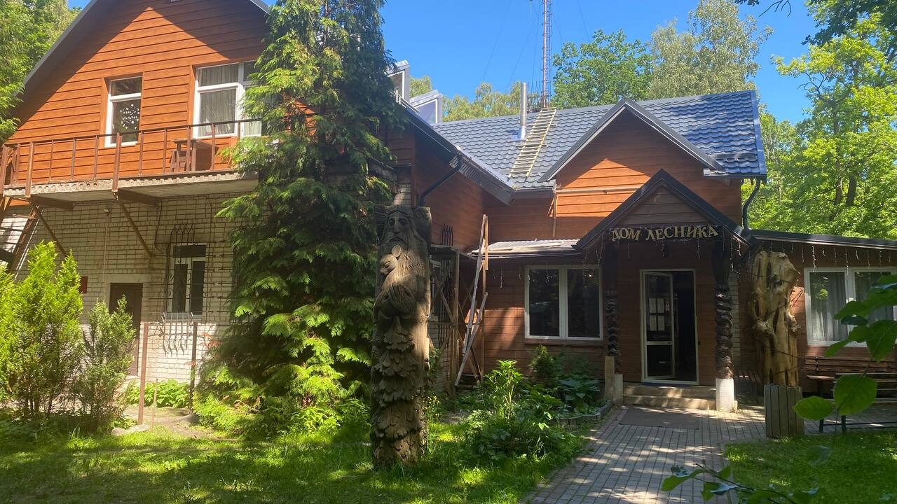
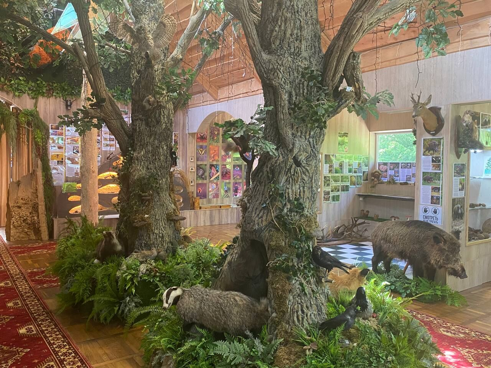
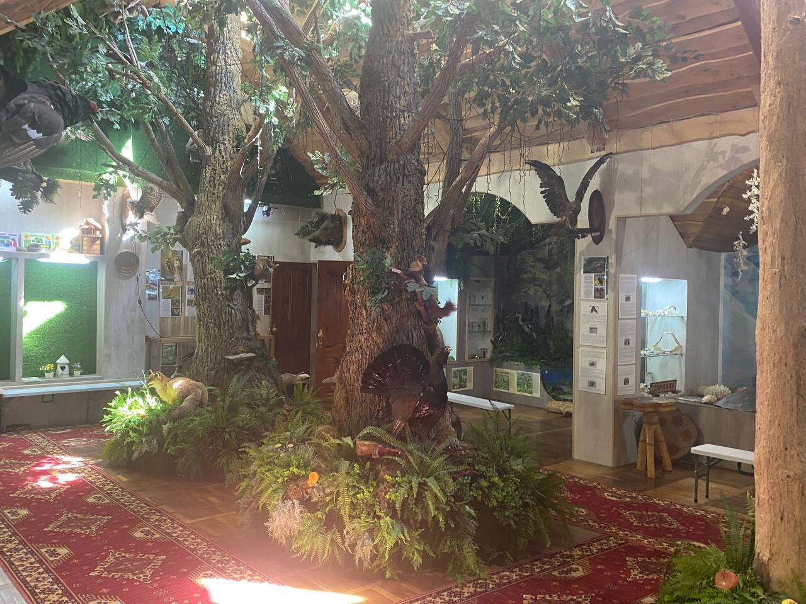
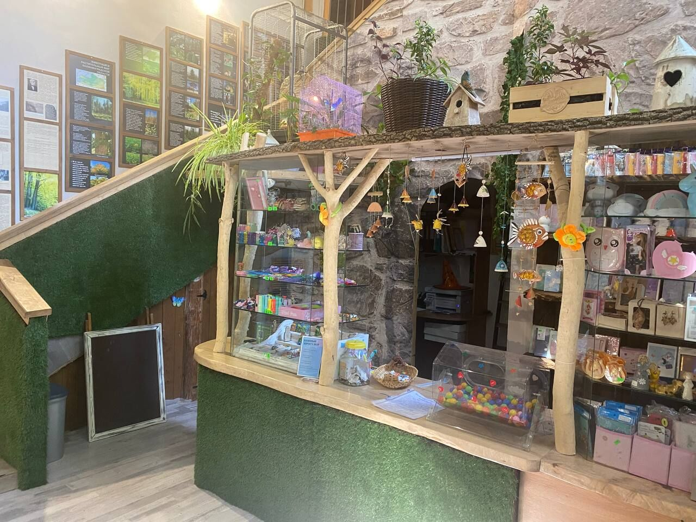

Светлогорск · Калининградская область
Музей леса
Дом лесника с резными духами у входа, живой уголок леса внутри и витрины с находками янтарного побережья.
Первая остановка
Дом, который построил лесник
Музей леса расположен в семи километрах от Светлогорска — на границе Отрадного и посёлка Лесное, среди калининградских лесов. Это уникальное место, где каждый посетитель может окунуться в удивительный мир природы. Музей появился по инициативе лесничего Владимира Ивановича Харитоненко: в 1970-х он начал собирать первую коллекцию, а в 1980 году для экспозиции построили двухэтажное здание.
Одно из главных направлений работы музея — экологическое просвещение. Здесь реализуют проекты по охране и восстановлению лесов, привлекая внимание общества к проблемам экологии и необходимости бережно относиться к природным ресурсам.
Внутри музея
Лесная чаща под одной крышей
Диорамы музея — это кусочки настоящего леса: мох, валежник и чучела его обитателей в естественных позах, будто звери просто притаились между деревьев. По соседству — небольшая лавка с лесными сувенирами и поделками мастерской музея.



Живой уголок
У музея есть и живые жители
Рядом с диорамами — настоящий вольерный дворик: здесь живут лесные и совсем не лесные звери, которые давно прижились в музее.


Перед визитом
Билеты
Школьные и туристические группы принимаем по предварительной записи — позвоните заранее, чтобы согласовать время.
Перед визитом
Режим работы
В праздничные дни режим может отличаться — уточняйте по телефону перед визитом.
Последняя остановка тропы
Контакты
Едете большой группой? Лучше предупредить нас заранее по телефону.